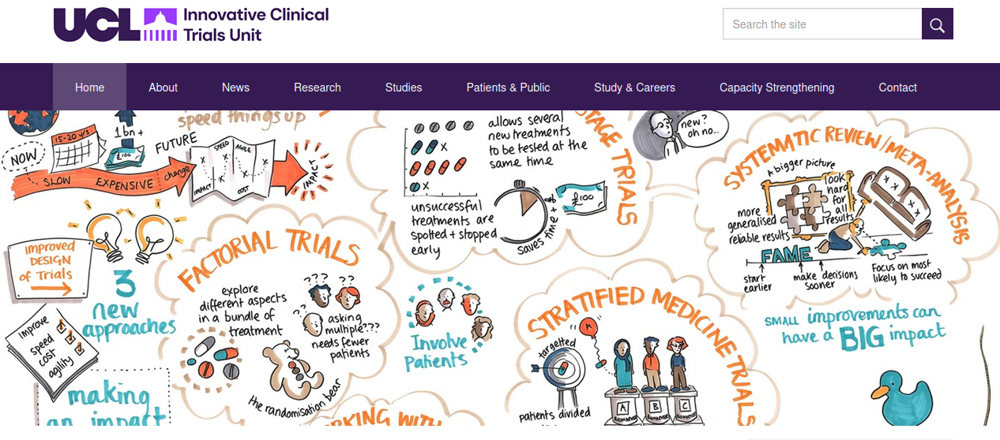
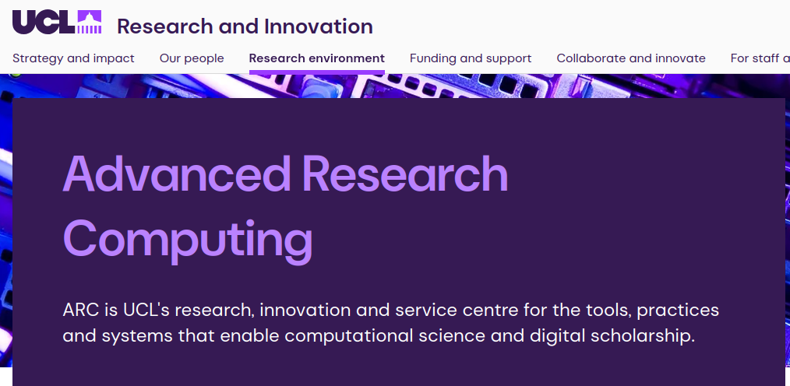
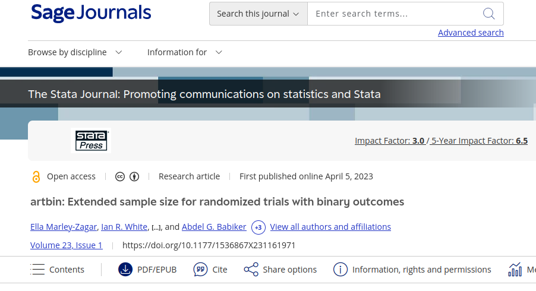

Using Large Language Models and Coding Agents to Translate Stata Packages: Benefits and Risks

Stephen Thompson et al.
UCL Centre for Advanced Research Computing and UCL Innovative Clinical Trials Unit
2026-09-03
Today’s Talk
- Brief Introduction (UCL ICTU, UCL ARC)
- Code Translation Motivation
- Code Translation Mechanics
- Workshop Results and Next Steps
Innovative Clinical Trials Unit

- Expert in clinical trial design and analysis.
- Robust/tested statistics to support clinical trial design.
- Impact through successful clinical trials.
Advanced Research Computing

- Support researchers to create impact through software.
- Software re-use and software sustainability.
- Software that outlives the original grant funding.
- Develop skills to contribute to key open source software.
Motication: Example artbin.

Motication: Example artbin.
- High quality software (including documentation and tests)
- Demonstrated impact - used and cited in published trials.
- Open source (GPL3) - free to download/modify
- need Stata License to run.
- Can we increase impact by translation.
Motivation Stata and R (Software Metrics)
- R is free and open source.
- Many more users and developers for R.
- Stata Language on GitHub 18.4K repositories
- R Language on GithHub 1.1M repositories
Motivation Stata and R - Creating Impact
- Conclusion. Translations;
- Likely to increase impact of software, but no evidence yet.
Stata2R: Practicalities
- Pre-requisites:
- Well written/documented/tested Stata code 👍
- Language Expertise (Stata and R)
- Domain Expertise (Statistics)
- Time (funding)
- Can we leverage advances in agent based code translation?
Agentic Coding (Claude Code)
- A user interface for working with large language models to complete software tasks.
- Users communicate in plain text (for example “translate artbin to R”)
- Non deterministic (stochastic sampling from many possible answers).
- We developed the Stata2R “plugin” with 4 “skills” to try and limit the effects of non deterministic behaviour.
Plugin Skill 1: Translation Strategy
- Summarise the purpose of the library.
- Is it worth translating? (existing R libraries, users etc)
- Is the documentation and testing sufficient to enable a good translation.
Plugin Skill 2: Stata to Pseudocode
- Evidence that two stage translation creates better code.
- Enables a human review step.
- Supports translation to multiple target language.
- Deliberately excluded any existing tests.
Plugin Skill 3: Pseudocode to R
- Use the pseudocode to create an R package.
- Copy over licence file and create README, CONTRIBUTING, files etc.
Plugin Skill 4: Add Stata Tests to R
- Port the Stata tests to R and confirm they pass.
- Document Stata to R test correspondence and verify results.
- Port Stata documentation and examples to R (create vignettes)
What’s in a Plugin / Skill
Plugins are collections of skills that are easy to install
/plugins marketplace add https://github.com/stata-translations/Stata2R.git /plugin install stata-translation /reload-plugins /stata-translation:hello
Run as an interactive workshop
We developed and delivered a Workshop to
10 statisticians aiming to:
- Teach statisticians to use Claude to translate code.
- Leverage statisticians skills to help understand how well Claude works.
Pre-Workshop: Stata and R Fluency
Post-Workshop: Skills assessment (Time Taken).
Post-Workshop: Concerns Work Cloud
Post-Workshop: Ideas for Improvements / Future Work.
Further Considerations
- Ongoing development (do you plan on maintaining both versions?)
- Are you complying with the original license?
- Who owns the copyright?
- Preventing access to sensitive data.
Summary
- Claude can translate code.
- Results are non deterministic.
- The plugin provides some structure, but human intervention is still required to keep Claude on track.
- Translation depends on documentation and testing as well as source code quality.
- Accuracy and validation is critical for clinical trials software.
Contributors:
James Carpenter, Tra My Pham, Asif Tamuri, David Fisher, David Perez-Suarez, Matteo Quartagno, Carlos Diaz Montana, Ian White
Links:
Slides: https://doi.org/10.5281/zenodo.22124101 Workshop Results: https://doi.org/10.5281/zenodo.22093627 Stata2R Plugin: https://github.com/stata-translations/Stata2R